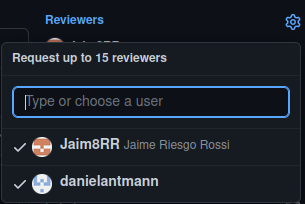
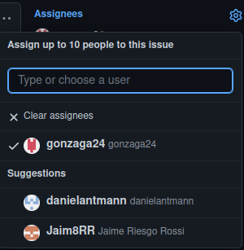
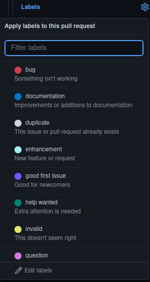
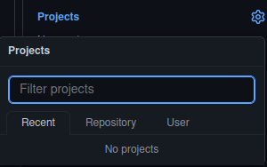
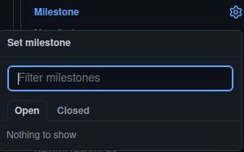
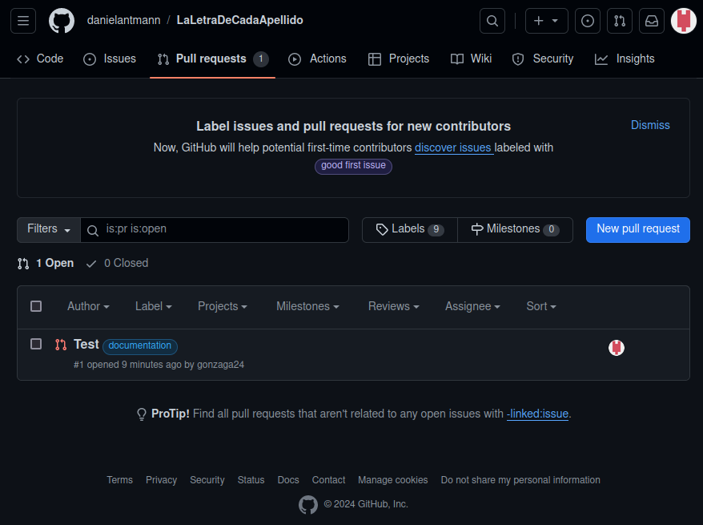

¿Qué es un Pull Request? ¿Cómo podriamos realizar una? ¿Qué utilidad tiene?
Una Pull Request es una función que nos permite comentarle al equipo los cambios en una rama del repositorio. Una vez se abre una solicitud se puede debatir y revisar los cambios antes de fusionarse con la rama main.
Para poder utilizar un Pull Request debemos acceder a nuestro repositorio remoto en GitHub y entrar en la pestaña de Pull Request.

Le damos a new y seleccionamos la rama devDani para comparar los cambios con la rama principal.


Al seleccionar al rama que queremos comparar nos aparecen los cambios realizados en esa rama:

Le damos a Create pull request, Nos pedira un titulo para la solicitud y algo de descripción sobre el cambio.


Aparte de intrducir esos datos podemos añadir revisores, participantes, etiquetas(bug, help want, etc), incidencias(solicitudes pasadas ) e hitos(marcador de etapas o cambios) en la Pull Request.
    Una vez la creamos la Pull Request nos aparecería este asi:
çAhora al entrar a la pestaña de Pull Request nos aparece la Pull Request que acabamos de crear:

La utilidad de una Pull Request se resume en poder revisar y tener un control sobre los cambios que el equipo produce en el desarrollo del proyecto.
Ejemplos de conflictos que han surgido durante la resolución del problema.
-Fallo al hacer push al repositorio remoto.
Para remediar el error nos hizo falta añadir un origin nuevo con la clave ssh del repositorio remoto.
Al intentar hacer un push nos aparecia lo siguiente:

Despues de remediar el problema nos aparece lo siguiente:

Lo que se hace en la imagen es eliminar el origin1 que estaba con una clave incorrecta y añadir de nuevo origin1 con la clave ssh del repositorio remoto para poder acceder.